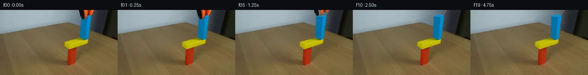

![首帧]()

Round 00
2026-11-05T10:53:04.193343+00:00像素候选变化代码 +203/−0inspection 更新
pixels cd1f00c60228cdbc · code 9a87284618e98d81
查看本轮 generate.py 真实 diff
--- previous/generate.py
+++ current/generate.py
@@ -0,0 +1,203 @@
+from pathlib import Path
+
+import cv2
+import numpy as np
+from PIL import Image, ImageDraw, ImageFilter
+
+from artifact_io import save
+
+
+ROOT = Path(__file__).resolve().parent
+W, H = 256, 144
+
+
+def soft_polygon(points, blur=0.65):
+ """Return a lightly antialiased native-resolution polygon mask."""
+ scale = 4
+ mask = Image.new("L", (W * scale, H * scale), 0)
+ draw = ImageDraw.Draw(mask)
+ draw.polygon([(int(x * scale), int(y * scale)) for x, y in points], fill=255)
+ if blur:
+ mask = mask.filter(ImageFilter.GaussianBlur(blur * scale))
+ return np.asarray(mask.resize((W, H), Image.Resampling.LANCZOS), dtype=np.float32) / 255.0
+
+
+def over(dst, src, alpha):
+ a = np.clip(alpha[..., None], 0.0, 1.0)
+ return np.clip(dst.astype(np.float32) * (1.0 - a) + src.astype(np.float32) * a, 0, 255).astype(np.uint8)
+
+
+def translate_layer(rgb, alpha, dx, dy):
+ matrix = np.float32([[1, 0, dx], [0, 1, dy]])
+ shifted_rgb = cv2.warpAffine(
+ rgb, matrix, (W, H), flags=cv2.INTER_LINEAR, borderMode=cv2.BORDER_CONSTANT,
+ borderValue=(0, 0, 0)
+ )
+ shifted_alpha = cv2.warpAffine(
+ alpha, matrix, (W, H), flags=cv2.INTER_LINEAR, borderMode=cv2.BORDER_CONSTANT,
+ borderValue=0
+ )
+ return shifted_rgb, shifted_alpha
+
+
+def background_plate(source):
+ """Remove the cropped grabber and analytically restore what it occluded."""
+ plate = source.copy().astype(np.float32)
+
+ # A smooth reconstruction of the static wall / dark rear panel. Only this
+ # narrow top strip was hidden by the grabber; samples are taken from the
+ # immediately adjacent pixels in the supplied frame.
+ yy, xx = np.mgrid[0:H, 0:W]
+ restore = np.zeros((H, W, 3), dtype=np.float32)
+ for y in range(0, 24):
+ left_ref = source[y, 168].astype(np.float32)
+ right_ref = source[y, 205].astype(np.float32)
+ for x in range(169, 205):
+ # The wall/panel boundary slopes slightly left as it descends.
+ boundary = 202.2 - 0.24 * y
+ if x < boundary:
+ # Wall gradient extrapolated from x=160..171.
+ p0 = source[y, 160].astype(np.float32)
+ p1 = source[y, 170].astype(np.float32)
+ restore[y, x] = p0 + (p1 - p0) * ((x - 160) / 10.0)
+ else:
+ # Dark panel gradient extrapolated from x=203..214.
+ p0 = source[y, 204].astype(np.float32)
+ p1 = source[y, 214].astype(np.float32)
+ restore[y, x] = p0 + (p1 - p0) * ((x - 204) / 10.0)
+
+ remove = np.maximum(
+ soft_polygon([(170, -2), (184, -2), (188, 14), (186, 20), (182, 23), (176, 21), (172, 14)]),
+ soft_polygon([(181, -2), (203, -2), (202, 7), (198, 12), (194, 17), (190, 21), (184, 21), (184, 11)])
+ )
+ valid_restore = remove.copy()
+ plate = plate * (1.0 - valid_restore[..., None]) + restore * valid_restore[..., None]
+
+ # Rebuild the part of the blue wooden prism hidden by the jaws. The lower
+ # visible blue faces supply their fixed photographic grain and gradients.
+ texture = source.astype(np.float32).copy()
+ rng = np.random.default_rng(181)
+ fixed_grain = rng.normal(0.0, 0.9, (H, W, 1)).astype(np.float32)
+
+ front = soft_polygon([(176.0, 14.0), (190.0, 15.3), (188.0, 65.0), (175.0, 61.0)], 0.45)
+ right = soft_polygon([(190.0, 15.3), (198.0, 11.8), (194.0, 60.5), (188.0, 65.0)], 0.45)
+ top = soft_polygon([(176.0, 14.0), (183.2, 9.5), (198.0, 11.8), (190.0, 15.3)], 0.42)
+
+ front_rgb = np.zeros_like(texture)
+ right_rgb = np.zeros_like(texture)
… diff truncated; 116 more lines …